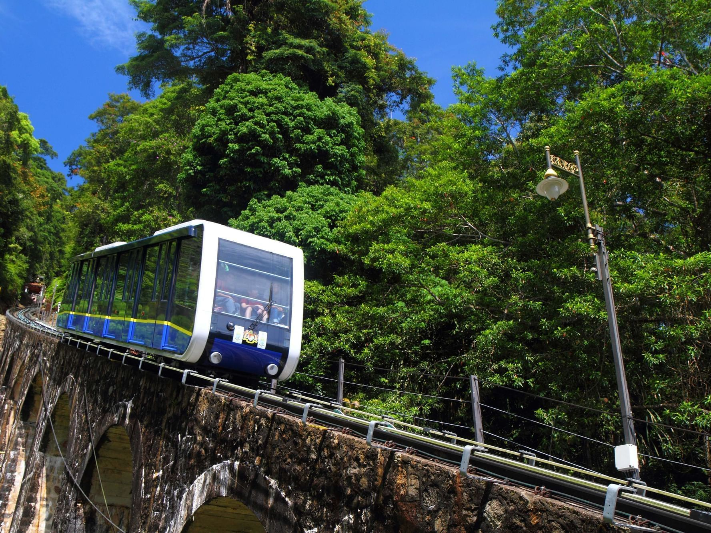
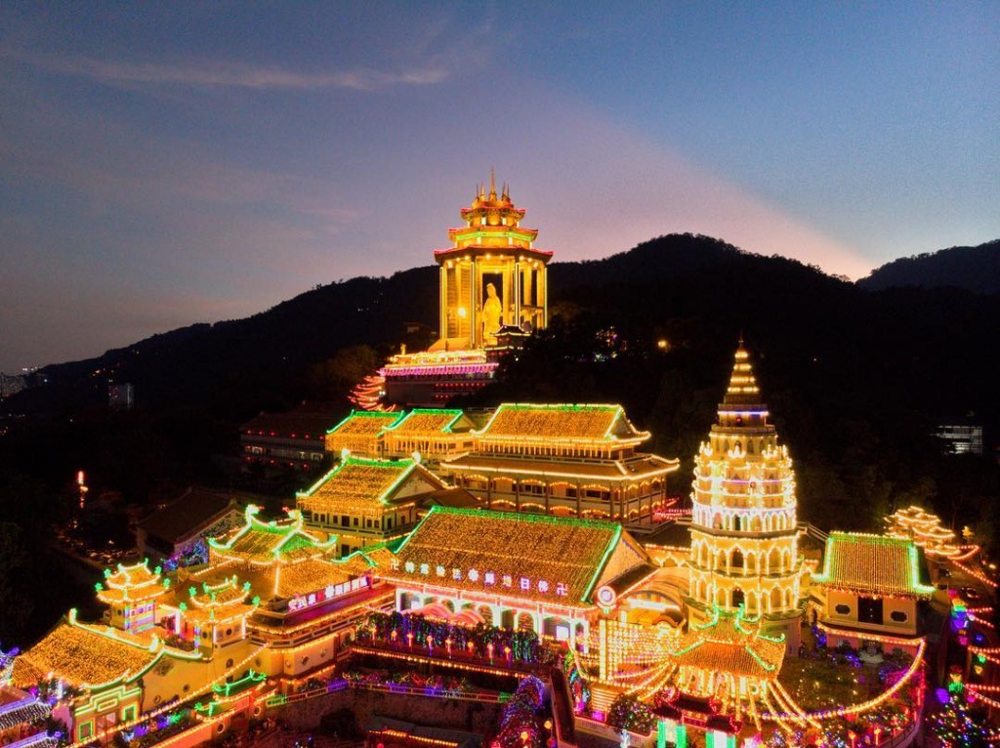
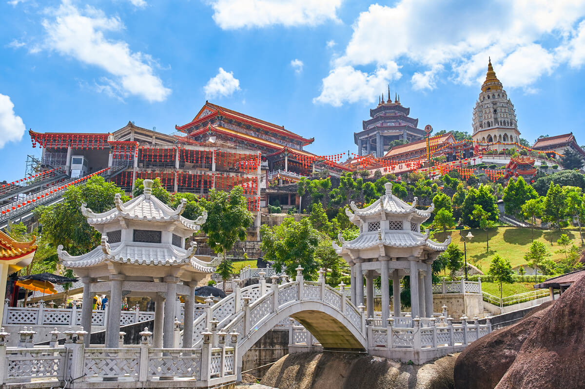
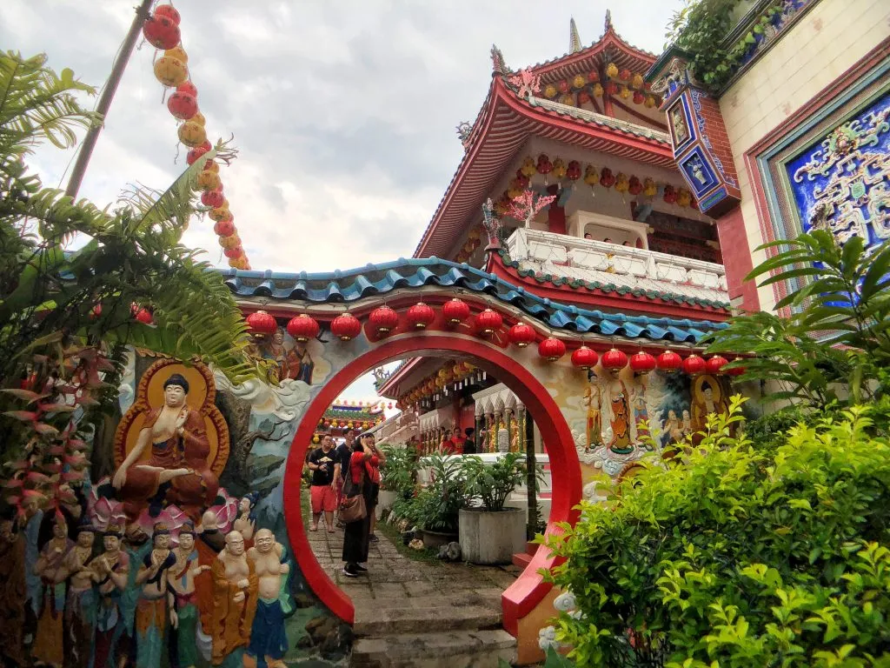

"Penang Hill: A Breathtaking Escape Above the Island"
Penang Hill is a serene escape from the city, located just outside George Town. Known for its cool climate and stunning views, it's accessible by one of the oldest funicular railways in Asia. At the top, visitors can explore nature trails, heritage sites, and enjoy breathtaking vistas of Penang Island.
Penang Hill, or Bukit Bendera, is one of the most famous and oldest tourist attractions in Penang, Malaysia. Located about 821 meters above sea level, it offers a cool escape from the tropical heat and provides breathtaking panoramic views of George Town, the mainland, and the surrounding nature. The hill has been a popular hill resort since the colonial era and continues to attract both locals and tourists today.
One of the main highlights of visiting Penang Hill is the Penang Hill Railway, a funicular train that takes visitors from the base station in Air Itam to the top of the hill. The ride itself is scenic and relaxing, passing through lush greenery and old colonial houses along the way. Once at the summit, visitors can enjoy various attractions including The Habitat (a nature park and canopy walk), historical colonial mansions, and the iconic David Brown’s restaurant and tea terrace.
In addition to its historical charm, Penang Hill is also rich in biodiversity. It is home to many native plant species and wildlife, making it a great spot for nature lovers. The cooler climate and peaceful atmosphere also make it ideal for walking trails and photography. The Skywalk at the top offers an incredible view, especially at sunrise or sunset, when the entire island is bathed in golden light.
Overall, Penang Hill combines natural beauty, historical significance, and modern attractions, making it a must-visit destination in Penang. Whether you're looking to explore nature, learn about history, or simply enjoy the view, Penang Hill offers a memorable and refreshing experience.
